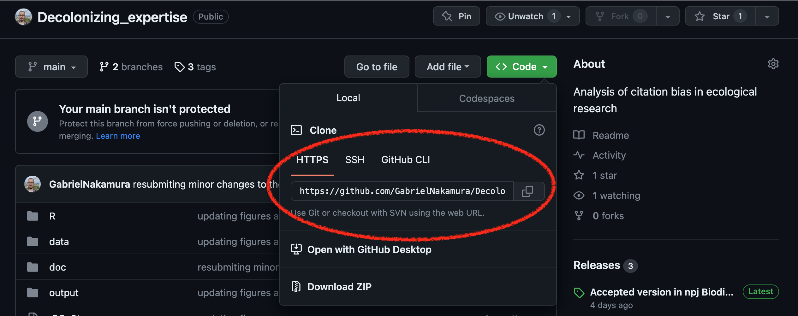
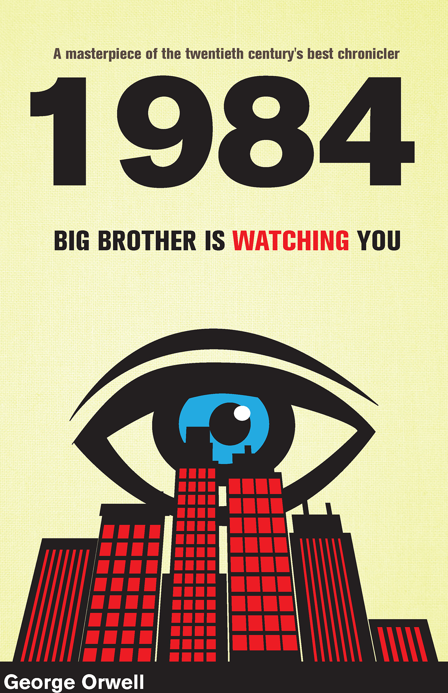
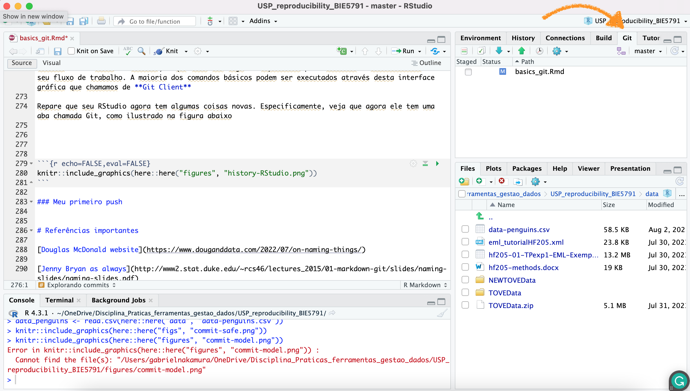
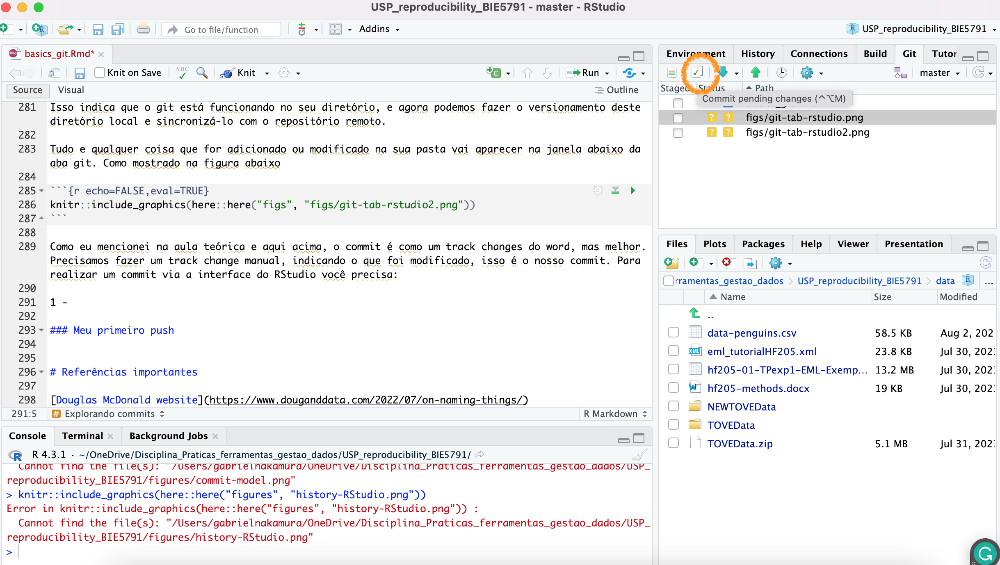
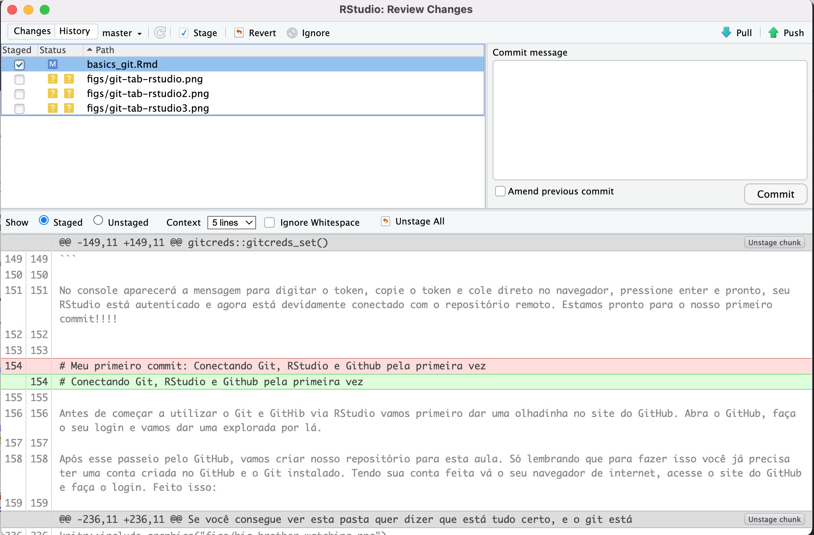
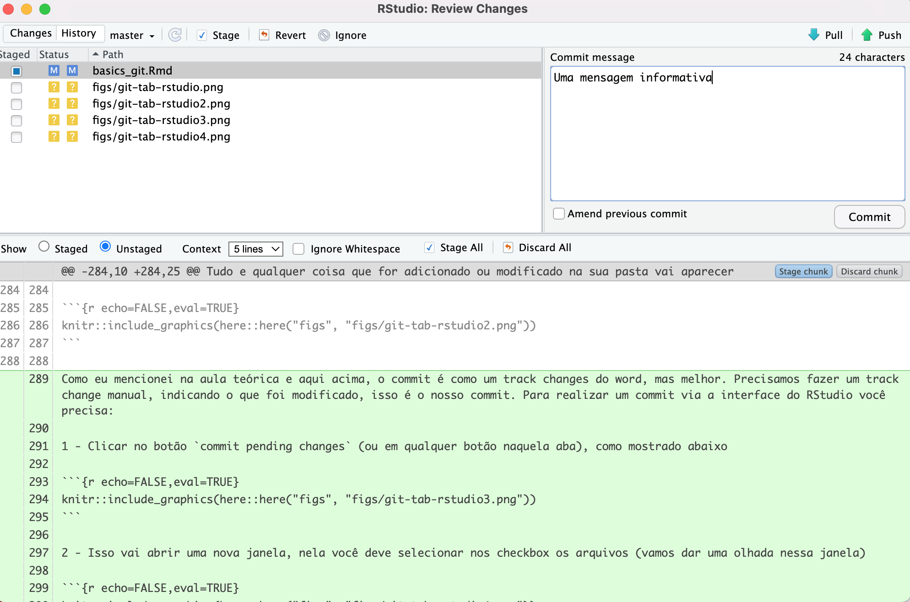
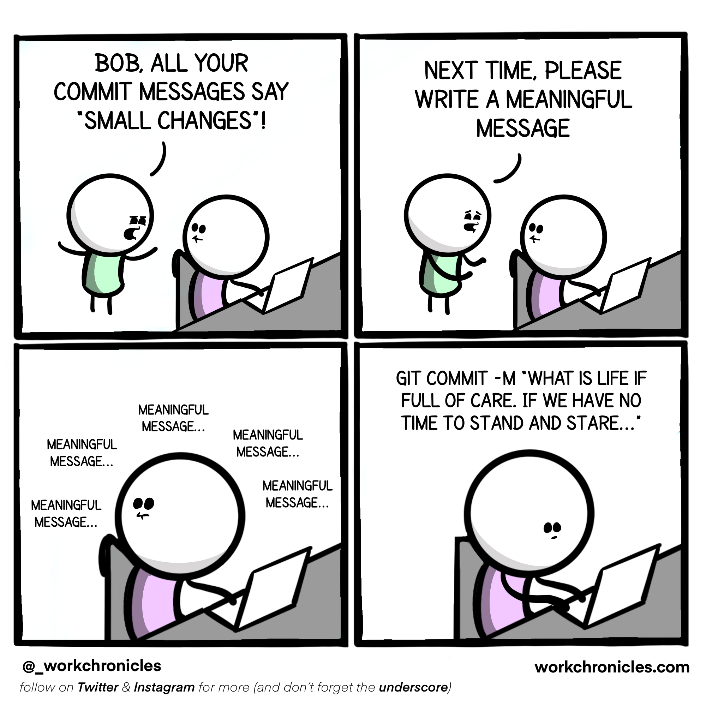
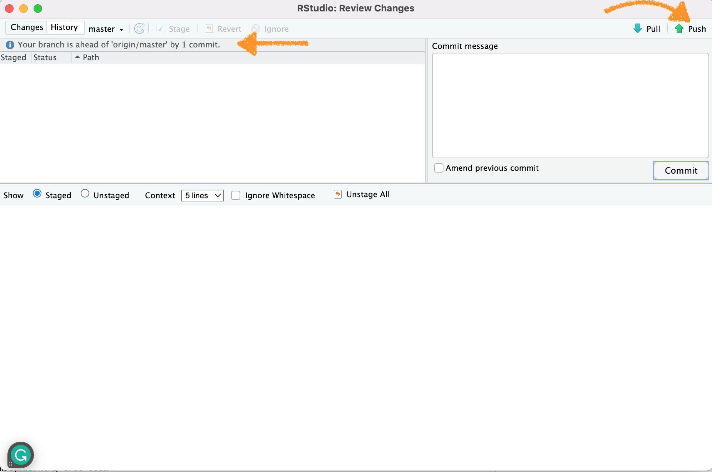

Controle de versão
Gabriel Nakamura
2024-07-12
Apresentação
Nesta primeira seção irei apresentar as principais ferramentas que utilizaremos para nos ajudar na organização computacional de dados, scripts, análises e projetos científicos em geral. Estas ferramentas irão auxiliar desde a organização local de seus dados até a disponibilização destes dados em plataformas de acesso aberto. Várias delas já devem ser velhas conhecidas por vocês, por exemplo, o RStudio, então dispensam maiores apresentações. Por isso, grande parte deste documento vai tratar de uma ferramenta até bem conhecida pelo nome, mas que pra muita gente pode parecer coisa de outro mundo: o Git. Vocês verão que conhecem mais dele do que imaginam, e que muitas das funções que ele possibilita realizar nós já fazemos em nosso dia-a-dia através de outros aplicativos, porém, com mais eficiência e controle das ações.
Pacotes necessários
Para executar os códigos desta parte é importante ter os seguintes
pacotes instalados: usethis, devtools e
gitcreds
Você pode realizar a instalação utilizando a seguinte linha de código:
libs <- c("usethis", "devtoos", "gitcreds")
if (!requireNamespace(libs, quietly = TRUE)){
install.packages(libs)
}Caso você não tenha os pacotes acima citados a instalação será realizada. Caso já tenha em seu computador, nada irá acontecer.
Hello Git - Introdução ao uso de sistema de controle de versões
O Git trata-se de um sistema de controle de versões, mas afinal, o que é um sistema de controle de versões? Estamos mais acostumados do que imaginamos quando o assunto é controle de versões, apesar de parecer algo de outro mundo. Um exemplo que todos nós estamos acostumados é oferecido pelo editor de texto Word, quando ligamos a opção “Track changes”. Ao fazermos isso estamos controlando todas as modificações que fazemos em um documento. O Git faz a mesma coisa, porém para uma pasta inteira (ou diretório, na linguagem do controle de versões).
Portanto, o Git nada mais é que um sistema criado para realizar o rastreio de toda e qualquer modificação de arquivos dentro de uma pasta, utilizando a terminologia do versionamento, tudo o que é feito em um diretório associado ao Git é observado (watch na linguagem do versionamento).
Git e GitHub
Ter a possibilidade de controlar as versões dos documentos já é bom, imagine, além disso, ter um local remoto onde tudo isso fica guardado. Ou seja, se seu computador quebrar, for roubado, pifar, ou se você troca-lo, tudo estará seguro em um lugar chamado GitHub.
Portanto, Git e GitHub são coisas distintas. O GitHub é o GoogleDrive (ou o OneDrive) dos códigos. Ele tem como função armazenar remotamente todos os trabalhos que são feitos localmente e que estão sendo monitorados pelo Git, mas com muito mais potencialidades e controle de armazenamento que as ferramentas do Bill Gates. Por exemplo, imagine guardar um site inteiro no Google Drive, ou um pacote estatístico que você escreveu, e ainda disponibilizar essas coisas para outras pessoas… parece complicado se usarmos as ferramentas comerciais mais comuns, mas com o GitHub tudo isso se torna possível ser realizado com facilidade
Git e Git client
Temos uma ferramenta que possibilita o versionamento (o Git), outra que possibilita o armazenamento, colaboração, compartilhamento (GitHub), mas como controlamos essas ferramentas? É aí que entra o que chamamos de Git client
Uma simples analogia para entender a diferença entre um Git client e o Git é a diferença entre R e RStudio. O R é a ferramenta onde os processos são realizados, o RStudio é uma interface específica e amigável para o uso do R. Da mesma forma o Git é a ferramenta que realiza o controle de versão, já o Git client é a interface específica para que o usuário possa interagir de maneira mais amigável com o Git e GitHub. Existem vários Git clients que podemos utilizar para realizar essa interação, por exemplo, o GitKraken e GitLab. Cada um tem suas vantagens e desvantagens.
Neste curso usaremos um Git client que é um velho conhecido nosso, o RStudio. Faremos isso pois o RStudio (agora chamado Posit, mas vamos manter o velho nome) é a interface mais comum utilizada nos estudos de ecologia e evolução, além de apresentar uma grande quantidade de materiais disponíveis na internet e também por ser aquela que o instrutor que vos fala tem mais familiaridade.
Integrando Git, GitHub e RStudio
Agora que conhecemos as ferramentas, imagine se conseguíssemos colocar elas em um só lugar. Imagine um sistema que integra o seu programa favorito de análises estatísticas, o seu programa favorito de controle de versões e também o seu repositório remoto favorito. Pois é disso que se trata a integração do Git com o GitHub e RStudio. Tudo (quase tudo) pode ser feito no Git através do RStudio. Portanto, nas próximas seções irei apresentar como podemos integrar o controle de versão (Git) com o repositório remoto (GitHub) e o RStudio.
Mãos no teclado - Instalando e configurando o Git
O primeiro passo antes de instalar o Git é saber se você já tem ele instalado em seu computador. Para tanto você deve acessar a linha de comando de seu sistema operacional (bash, prompt, isso vai variar dependendo do tipo de sistema que usa) e digitar o comando:
Caso retorne uma mensagem indicando o local do git no seu computador, ótimo, uma tarefa a menos, caso contrário você terá que instalar o git de acordo com as especificidades do seu sistema operacional que serão apresentadas a seguir.
Instalação do Git no Windows
Instale o Git acessando aqui e siga as informações do auxiliar de instalação que foi baixado.
Instação do Git no Mac OS
Instale o Git no seu Mac baixando o Xcode command line tools caso você ainda não o tenha. Esta aplicação já vem com o git. Aceite as configurações e clique em instalar
Em seguida configure o git usando a linha de comando seguinte no seu terminal:
Instalação do Git no Linux
Digite a seguinte linha de comando caso você tenha Ubuntu ou Debian Linux
Se tem Fedora ou HatLinux use:
Algumas coisas podem ser diferentes dependendo do seu sistema operacional e versão do Linux, caso se depare com algum problema tente abrir um Issue no repositório desta apostila no GitHub e tentaremos resolver :)
Configuração do Git e integração com RStudio
Utilizando o pacote usethis
Após a instalação do Git devemos configur o GitHub no nosso
computador. Para configurar o GitHub, ou seja, para que o Git e GitHub
saiba quem está usando, vamos utilizar a configuração com auxílio do
ótimo pacote usethis. Portanto, abra o RStudio e
digite:
Lembre de substituir os campos que aparecerão no console do seu R com suas informações. “SeuNomeDeUsuario” é o nome que você cadastrou no GitHub
Nome do usuário destacado em vermelho
Utilizando o pacote gitcreds - Mais
recomendada
Apesar de estarmos falando de ciência aberta, o seu perfil no GitHub é pessoal, portanto é importante que haja uma forma de autenticação onde o GitHub saiba que você é o dono do perfil. Isso geralmente é feito através do uso de senhas, porém senhas nem sempre são seguras (ok, provavelmente ninguém vai querer invadir nosso GitHub para tomar informações sobre uma função que calcula a dimensionalidade da biodiversidade, mas outras coisas são desenvolvidas e hospedadas no GitHub), e por isso a forma padrão de autenticação utilizada pelo GitHub é o chamado PAT (Personal Access Token). Segundo o próprio GitHub um PAT é:
“Personal access tokens are an alternative to using passwords for authentication to GitHub when using the GitHub API or the command line.”
O PAT nada mais é que uma “senha” gerada pelo próprio github e que deve ser renovada com certa periodicidade. O GitHub não permite mais autenticações via senha, apenas usando o PAT. Portanto, o último passo para integrar o R, RStudio, Git e GitHub é informar o PAT. Precisaremos fazer isso apenas uma vez, e repetir apenas quando o PAT expirar. Vamos começar gerando o PAT. Para informações mais detalhadas sobre o PAT você pode acessar esta página.
Para configurar o PAT vamos usar primeiro o pacote
usethis e depois vamos utilizar as funcionalidades do
pacote gitcreds.Digite a linha de código no seu console do
R:
Isso abrirá uma guia no seu navegador para que você gere um token, tal como mostrado na imagem abaixo
Exemplo da página do GitHub para gerar um token
Você verá inúmeras opções de acesso. As caixinhas que vamos escolher vai depender do grau de controle que você deseja ter para usar o GitHub via Rstudio.
Após gerado, guarde esse token com carinho, pois ele vai ser sua nova senha de entrada para o GitHub via RStudio, quando for requerido. Para armazenar senhas e dados eu sugiro o programa LastPass.
Próximo passo é registar esse token gerado em nosso computador. Para tanto, faça o seguinte:
No console aparecerá a mensagem para digitar o token, copie o token e cole direto no navegador, pressione enter e pronto, seu RStudio está autenticado e agora está devidamente conectado com o repositório remoto. Estamos pronto para o nosso primeiro commit!!!!
Conectando Git, RStudio e Github pela primeira vez
Antes de começar a utilizar o Git e GitHib via RStudio vamos primeiro dar uma olhadinha no site do GitHub. Abra o GitHub, faça o seu login e vamos dar uma explorada por lá.
Após esse passeio pelo GitHub, vamos criar nosso repositório para esta aula. Só lembrando que para fazer isso você já precisa ter uma conta criada no GitHub e o Git instalado. Tendo sua conta feita vá o seu navegador de internet, acesse o site do GitHub e faça o login. Feito isso:
1 - Crie um repositório
Crie um novo repositório clicando no botão destacado na figura abaixo
Criando um novo repositório a partir do GitHub
Existem outras formas de iniciar um repositório, inclusive direto pelo RStudio, mas vamos pelo caminho mais simples por enquanto.
O ABC do versionamento: Clone, Pull, Push and Commits
Vimos nas aulas teóricas que essas palavrinhas não são nada mais que ações que praticamos no nosso dia-a-dia. Agora é hora de colocar em prática.
Já temos um repositório remoto, agora precisamos que ele exista em nossos computadores para que possamos sincronizar nosso trabalho local e remoto. De maneira geral o que queremos fazer a partir de agora está ilustrado na figura seguinte

A partir de agora iremos, passo a passo, realizar todas as funções básicas essenciais para organização computacional de um projeto científico.
O primeiro passo é realizar uma clonagem!
O Clone
Referência de velho
Para que nosso repositório local esteja ligado ao nosso repositório remoto precisamos primeiro conectá-los. Fazemos isso ao clonar o repositório remoto em nossa máquina. Clonar (clone) nesse caso não é nada mais que criar uma cópia exata de um repositório remoto em sua máquina. A partir desse momento esses repositórios estarão conectados até que o Git os separe.
Para clonar vá até o repositório remoto de interesse, e copie a chave https, como mostrado na figura a seguir:

Clique no botão de cópia e vamos para o RStudio. No RStudio vá em
File e depois New Project. A partir daí siga
as imagens abaixo:
1. Copiando a chave https no GitHub
Copiando chave https
2. Criando um novo projeto localmente

Abrindo um novo projeto
3. Colando a chave para ligar o repositório remoto com o local
Colando a chave https
Ao clicar em Create project o repositório remoto será
imediatamente transferido para o seu computador. Uma pasta (o diretório
local) será criado no local que você escolheu e, assim, RStudio, Git e
Github estarão plenamente conectados. Tudo certo até aqui? Uma pausa
para descanso com um vídeo.
Pull, Commits e Push
Se você chegou até aqui sem erros isso quer dizer que Git e GitHub já
estão integrados no RStudio. Portanto, qualquer coisa que fizermos nesta
pasta está sendo observado a partir de agora pelo git. Para
certirficar-se disso, habilite a visualização de arquivos ocultos no seu
computador, você vai notar que na raiz desta pasta clonada existe uma
pasta .git, como na figura a seguir

Se você consegue ver esta pasta quer dizer que está tudo certo, e o git está observando (watch no jargão do versionamento) cada modificação e cada arquivo dentro desta pasta (a menos que você inclua o arquivo no .gitignore, mas isso é assunto para outro momento).

Agora iremos executar funções que, até o fim deste curso, serão quase automáticas no nosso fluxo de trabalho com versionamento.
Meu primeiro commit
O que é um commit?
Commit, ou “revisão”, é uma mudança individual em um arquivo ou um conjunto de arquivos dentro da pasta observada pelo git. Os commits são como check-points para o nosso repositório. Uma analogia interessante para os commits foi apresentada na aula e está ilustrada aqui, na figura seguinte
Vamos pensar que nosso projeto é uma montanha, e estamos escalando ele. Nosso objetivo final é, obviamente, finalizar o projeto, chegando ao topo da montanha. A medida que progredimos,caso venhamos a cometer um erro, a queda pode ser grande. Desta maneira, utilizamos grampos onde ancoramos nossa corda a medida que a escalada progride. Em caso de erro, a queda será apenas até o grampo anterior onde a corda foi ancorada. Os commits servem como os clipes que ancoram a corda a medida que progredimos no projeto. Se cometermos um erro em algum arquivo, tudo certo, podemos voltar no commit anterior, ou anteriores, para tentar descobrir onde o erro foi cometido.
Da mesma forma que na escalada, se utilizarmos clipes muito pertinhos uns dos outros vamos ficar lentos demais, e o progresso até o topo será comprometido, se fizermos muitos commits será difícil voltar em momentos específicos do projeto, visto que terão muitos commits para serem checados. Portanto, a regra é: faça commits com parcimonia, ou seja, nem muitos, nem poucos.
Vamos fazer uma modificação na nossa pasta. Podemos adicionar
arquivos, já que ela está vazia. Para tanto vamos usar os arquivos do
pacote de dados palmer penguins que estão nesse repositório. Lembre-se
de ler os arquivos utilizando o {here} e utilizar o
Rproject para abrir o diretório
Obs se quiserem usar seus próprios dados fiquem a vontade, o uso do palmerpenguins é apenas opcional e a título de procedimento didático.
Caso estejam trabalhando com seus próprios dados, jogue os arquivos para dentro do diretório que clonamos. O próximo passo é fazer nosso primeiro commit.
Explorando commits
 Existem duas formas de fazer versionamento usando o Git e Github via
RStudio. Uma delas é a linha de comando, a outra é via uma interface
visual, que nesse caso é o próprio RStudio. Vamos começar fazendo o
versionamento via interface visual. A opção para isso é que ninguém se
assuste num primeiro momento com a linha de comando, e que isso não seja
um impeditivo para utilizar o versionamento no seu fluxo de trabalho. A
maioria dos comandos básicos podem ser executados através desta
interface gráfica que chamamos de Git Client
Existem duas formas de fazer versionamento usando o Git e Github via
RStudio. Uma delas é a linha de comando, a outra é via uma interface
visual, que nesse caso é o próprio RStudio. Vamos começar fazendo o
versionamento via interface visual. A opção para isso é que ninguém se
assuste num primeiro momento com a linha de comando, e que isso não seja
um impeditivo para utilizar o versionamento no seu fluxo de trabalho. A
maioria dos comandos básicos podem ser executados através desta
interface gráfica que chamamos de Git Client
Repare que seu RStudio agora tem algumas coisas novas. Especificamente, veja que agora ele tem uma aba chamada Git, como ilustrado na figura abaixo

Isso indica que o git está funcionando no seu diretório, e agora podemos fazer o versionamento deste diretório local e sincronizá-lo com o repositório remoto.
Tudo e qualquer coisa que for adicionado ou modificado na sua pasta vai aparecer na janela abaixo da aba git. Como mostrado na figura abaixo

Como eu mencionei na aula teórica e aqui acima, o commit é como um track changes do word, mas melhor. Precisamos fazer um track change manual, indicando o que foi modificado, isso é o nosso commit. Para realizar um commit via a interface do RStudio você precisa:
1 - Clicar no botão commit pending changes (ou em
qualquer botão naquela aba), como mostrado abaixo

2 - Isso vai abrir uma nova janela, nela você deve selecionar nos checkbox os arquivos (vamos dar uma olhada nessa janela antes de prosseguir)

3 - Escreva uma mensagem informativa. Como este é o primeiro commit
geralmente selecionamos todos os arquivos e escrevemos a mensagem
First commit para indicar que é o primeiro commit deste
repositório

OBS A mensagem deve ser realmente informativa, o commit fica armazenado no seu repositório e aparecerá publicamente caso o repositório seja público.

Pronto, o que fizemos agora foi basicamente colocar nossos arquivos na stagging area (marcar as checking box) e prepará-los para a entrega com uma mensagem informativa, o commit. Agora precisamos enviar os arquivos para o repositório remoto (upstream)
Meu primeiro push
Temos um diretório functionando com o git, ligado ao github, com
documentos dentro, mas, até agora ele apenas vive em nossos
computadores. Chegou a hora de empurrar estes documentos para o
diretório remoto, ou seja, aquele que clonamos lá no início. Para tanto
vamos fazer um push
O push nada mais é que empurrar os documentos para o repositório do
github, chamado as vezes de origin/master e outras vezes
origin/main, mas ambos querem dizer “um repositório remoto
o qual o diretório que estou trabalhando está ligado”.
Sem mais delongas, para fazer um push precisamos apenas apertar o botão verde como mostrado na figura abaixo

Duas coisas são importantes notar nesse momento. Primeiro o botão de push, que vai empurrar os arquivos para o repositório remoto (origin). Segundo, a mensagem destacada com a seta. Ela diz que o branch está a frente do origin/master por um commit. Traduzindo, nosso diretório local (branch), está uma versão a frente (pois modificamos coisas aqui) em relação ao nosso repositório remoto (origin/master). Ao empurrar (push) as modificações, essa mensagem desaparecerá, indicando que tanto branch quanto origin estão na mesma linha do tempo!
Extras
Aqui algumas dicas extras caso você queira seguir caminhos diferentes
que os apresentados até agora para montar um repositório e conectar com
o github. Vamos supor que você já tenha um projeto local em seu
computador que já está monitorado pelo git, contém alguns commits, e
você não quer perder estes commit. A forma mais fácil de fazer isso é
através do pacote {usethis}. Para utilizar esta abordagem
você precisa ter o PAT (Personal Access Token que criamos lá em
cima).
1 - verifique se o git está funcionando em seu repositório (veja se aparece a tab git no seu RStudio). Caso não veja você precisa iniciar o git no diretório que está trabalhando. Para fazer isso:
Outras opções existem, por exemplo, usando o terminal diretamente. Mas vamos manter a consistência e utilizar sempre o pacote usethis quando possível.
2 - uma vez que o git está funcionando neste repositório, precisamos criar um repositório remoto para ele no nosso perfil do GitHub. Para tanto precisamos apenas digitar:
Atividade
Hora de praticar com seus dados, ou ainda com os dados do palmerpenguins. Faça algumas modificações na tabela, salve um novo objeto, faça um commit e um push. Após fazer isso verifique na página do repositório no GitHub o que aconteceu.